R and frequentist inference
Structure of this session
Very quick refreshers
- Data types
- Arithmetic operators and transformations
- Object types
- Object indexing
Moderately quick refreshers
- For loops
- Apply functions
Not-so-quick refreshers
- Probability distributions
- Frequentist statistical inference
Data types
# Real numbers ("double")
x <- 9
z <- 13.2
# Integers
y <- 4L
# Characters
start <- "R is so much"
end <- "fun!"
sentence <- paste(start, end, sep = " ")
# Logicals & Boolean operators
2 + 5 == 7
3 %in% c(1:5) & 7 %in% c(1:5)Arithmetic operators and transformations
x + y # addition
x - y # subtraction
x * y # multiplication
x / y # division
x ^ y # exponentiation
log(x) # natural logarithm
exp(x) # exponential
sqrt(x) # square rootObject types
Vectors
A vector is a serial listing of data elements of the same type
(e.g. integer, double, logical,
or character).
item <- c("flour", "sugar", "potatoes", "tomatoes", "bananas")
price <- c(.99, 1.49, 1.99, 2.79, 1.89)
pricey <- price > 1.5Matrices
A matrix is a rectangular arrangement of data elements of the same type.
mat1 <- matrix(seq(-.35, .35, .1), nrow = 2, ncol = 4)
mat1## [,1] [,2] [,3] [,4]
## [1,] -0.35 -0.15 0.05 0.25
## [2,] -0.25 -0.05 0.15 0.35Arrays
An array is a multidimensional arrangement of data elements of the same type.
You may think of an array as a generalization of a matrix to any number of dimensions:
- all elements are of the same type
- fixed dimensional structure
- any vector or matrix can be stored as an array using
as.array()
Lists
Lists allow you to store objects of various classes, various storage types, and various sizes. This can be very useful, e.g., for returning various outputs from a function.
my_list <- list()
my_list$char_mat <- matrix(LETTERS, nrow = 2, ncol = 13)
my_list$vectors <- list()
my_list$vectors$num_vec1 <- c(1:2)
my_list$vectors$num_vec2 <- runif(10, min = 0, max = 1)Data Frames
Data frames are lists of variables of equal length, producing a rectangular structure. Unlike matrix columns, data frame columns can be of different storage types and classes.
groceries <- data.frame(
item = c("flour", "sugar", "potatoes", "tomatoes", "bananas"),
price = c(.99, 1.49, 1.99, 2.79, 1.89)
)
groceriesTibbles are data frames with an added class. They (arguably) show more intuitive behavior than data frames.
Object indexing
Numerical indexing
We can slice vectors, matrices, or arrays using numerical indexing.
mat1
mat1[1, 3:4]Indexing by names
When objects contain attributes such as names()
(list, data.frame), rownames()
and colnames() (matrix), or
dimnames() (array), we can also index by
character names:
Naming and slicing a vector
names(price) <- item
str(price)
price[c("potatoes", "bananas")]Logical indexing
Lastly, we can use logical evaluations to select subsets of elements. Suppose we only want those objects from groceries that are countable (i.e., end with an “s”) and cost at least EUR 2.00.
# Countable items
groceries$item
is_countable <-
substr(groceries$item, nchar(groceries$item), nchar(groceries$item)) == "s"
# Pricey items
groceries$price
is_very_pricey <- groceries$price > 2.00
# Find subset
groceries[is_very_pricey & is_countable, ]Loops and apply functions
Auxiliary tools for indexing
seq_len() and seq_along() are very helpful
in defining integer sequences:
# seq_len()
nrow(groceries)
1:nrow(groceries)
seq_len(nrow(groceries))
# seq_along
length(item)
seq_along(item)for-loop
for (i in seq_len(nrow(groceries))) {
print(paste0("Item ", i, ": ", groceries$item[i]))
}if, else
Let’s re-establish which foods are pricey (\(\geq 1.50\text{EUR})\) …
for (i in seq_len(nrow(groceries))) {
if (groceries$price[i] >= 1.5) {
cat(paste0("Item ", i, " (", groceries$item[i], "): Sooooo pricey!", "\n"))
} else {
cat(paste0("Item ", i, " (", groceries$item[i], "): Sooooo cheap!", "\n"))
}
}We may want to store this information in an object (e.g., a vector or a variable).
As a general rule:
- Whenever possible, initialize an empty container of fixed dimensions and subsequently fill it with values.
- Avoid sequentially growing objects by appending
elements/rows/columns via
c(),rbind(), orcbind().
## Initialize container (here, a vector)
pricey_or_not <- rep(NA, nrow(groceries))
## Fill container
for (i in seq_len(nrow(groceries))) {
if (groceries$price[i] >= 1.5) {
pricey_or_not[i] <- "pricey"
} else {
pricey_or_not[i] <- "cheap"
}
}Nested loops
Nested loops involve an inner loop within an outer loop. Operations within the inner loop are usually conditional on values defined by the outer loop.
An example: Suppose a wholesaler offers our grocery items in bulk. A single unit is shipped at the full price, 50 units are shipped at a discount of 10%, and 100 units are shipped at a 20% discount.
discounts <- data.frame(units = c(1, 50, 100),
discount = c(0, 0.1, 0.2))
for (i in seq_len(nrow(groceries))) {
# Print item number and name
cat(paste0("Item ",
i,
" (",
groceries$item[i],
")\n"))
for (j in seq_len(nrow(discounts))) {
# Print bulk price and price per unit for each item
cat(
paste0(
discounts$units[j],
" unit(s) cost EUR ",
groceries$price[i] *
discounts$units[j] *
(1 - discounts$discount[j])
,
" (EUR ",
round(groceries$price[i] *
(1 - discounts$discount[j]), 2),
" per unit)\n"
)
)
}
# Draw horizontal separator
cat("----------------------------------------------\n")
}## Item 1 (flour)
## 1 unit(s) cost EUR 0.99 (EUR 0.99 per unit)
## 50 unit(s) cost EUR 44.55 (EUR 0.89 per unit)
## 100 unit(s) cost EUR 79.2 (EUR 0.79 per unit)
## ----------------------------------------------
## Item 2 (sugar)
## 1 unit(s) cost EUR 1.49 (EUR 1.49 per unit)
## 50 unit(s) cost EUR 67.05 (EUR 1.34 per unit)
## 100 unit(s) cost EUR 119.2 (EUR 1.19 per unit)
## ----------------------------------------------
## Item 3 (potatoes)
## 1 unit(s) cost EUR 1.99 (EUR 1.99 per unit)
## 50 unit(s) cost EUR 89.55 (EUR 1.79 per unit)
## 100 unit(s) cost EUR 159.2 (EUR 1.59 per unit)
## ----------------------------------------------
## Item 4 (tomatoes)
## 1 unit(s) cost EUR 2.79 (EUR 2.79 per unit)
## 50 unit(s) cost EUR 125.55 (EUR 2.51 per unit)
## 100 unit(s) cost EUR 223.2 (EUR 2.23 per unit)
## ----------------------------------------------
## Item 5 (bananas)
## 1 unit(s) cost EUR 1.89 (EUR 1.89 per unit)
## 50 unit(s) cost EUR 85.05 (EUR 1.7 per unit)
## 100 unit(s) cost EUR 151.2 (EUR 1.51 per unit)
## ----------------------------------------------apply
Use apply() on matrices or arrays to apply a function
across selected dimension(s) of a matrix or array.
Row- and column-means
mat1
apply(mat1, 1, mean)
apply(mat1, 2, mean)Custom functions
You can apply custom functions to all apply functions:
count_negative <- function (x) {
sum(x < 0)
}
apply(mat1, 1, count_negative)
apply(mat1, 2, count_negative)Probability distributions
Univariate probability distributions
Univariate probability distributions give the distribution of probabilities for all feasible realizations of a single random variable.
Feasible means that it characterizes the (cumulative) probability mass of each possible outcome for a discrete/categorical variables or the (cumulative) probability density of each value within the support of a continuous variable.
Functions
For common probability distributions, R features the following four
commands (where dist is a placeholder):
ddist(x): Probability density/mass function (pdf/pmf). Takes a value \(x\) and returns the probability density/mass \(P(X=x)\).
pdist(x): Cumulative distribution function (CDF). Takes a value \(x\) and returns the cumulative probability \(P(X \leq x)\).qdist(q): Quantile function or inverse CDF. Takes a cumulative probability \(P(X \leq x)\) and returns the corresponding value \(x\).rdist(n): Produces \(n\) random draws from the distribution.
Discrete case: The binomial distribution
A binomial distribution characterizes the probability of outcomes for
a series of n independent realization of a binary random
variable.
Numerically, we define a binary variable as a variable that can either take on a value of zero (“failure”) or one (“success”).
An example is a series of coin flips \(n\), each of which produces either heads or tails. The numerical assignment of ones and zeroes is arbitrary. Here, we will consider heads as ones or successes. We denote the number as heads/successes as \(k\).
The binomial distribution is governed by a single probability parameter, \(\pi \in [0,1]\). It determines the probability of successes/ones for each realization. Accordingly, \(1 - \pi\) gives the probability of failure/zeroes.
In our example, \(\pi\) determines the fairness of a coin. A fair coin with \(\pi = 0.5\) is equally likely to produce heads and tails for each flip.
Probability mass function (pmf)
Below, we show the probability mass function of a random variable \(X\) that records the probability of each count of heads \(k \in \{0, 1, 2, 3, 4\}\) out of \(n=4\) flips with a fair coin, i.e., \(\pi = 0.5\): \(k \sim \text{Binom}(4, 0.5)\).
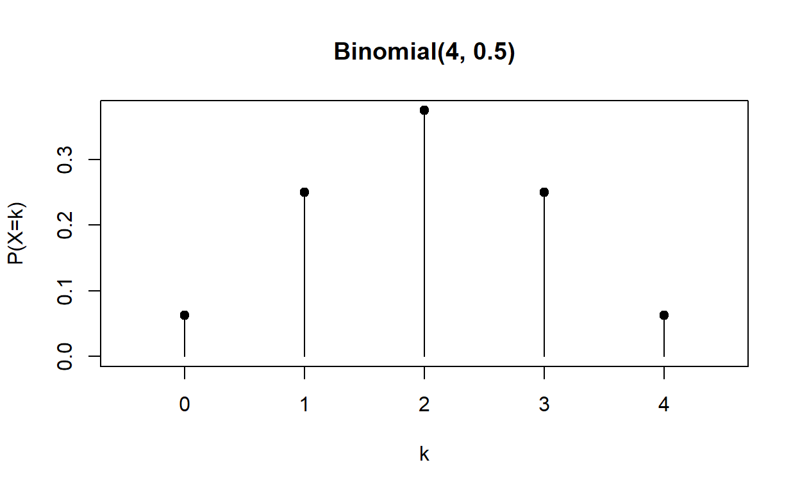
What do these probabilities sum to?
Cumulative distribution function (CDF)
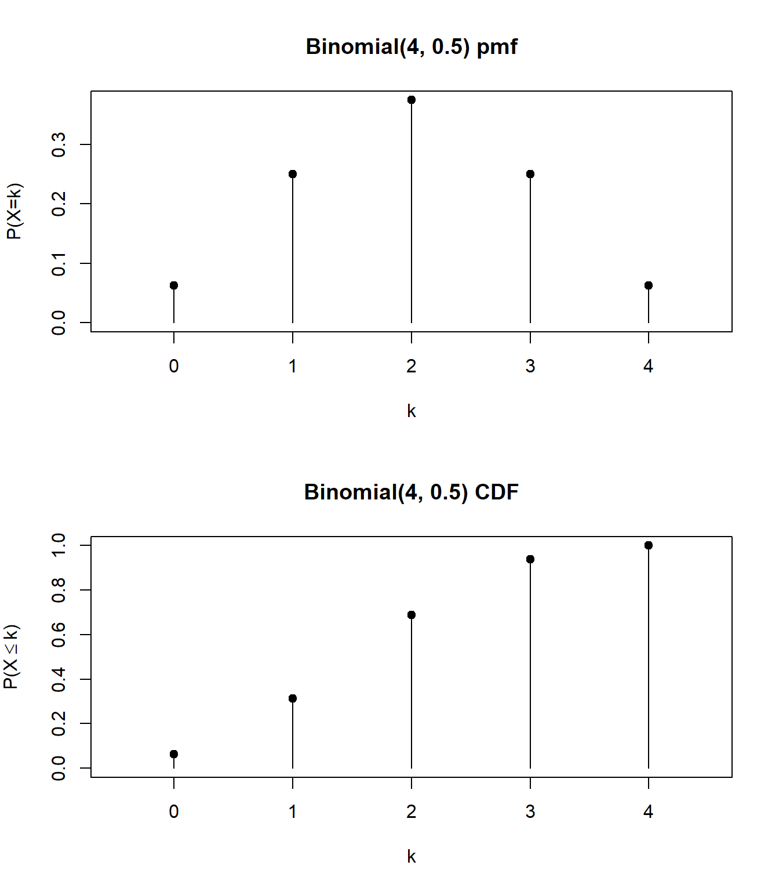
Continuous case: The standard normal distribution
Let’s illustrate the continuous case using everyone’s favorite, the standard normal.
The normal distribution is characterized by two parameters: Mean \(\mu\) and standard deviation \(\sigma\).
The standard normal distribution is a special case where \(\mu = 0\) and \(\sigma = 1\), \(\text{N} \sim (0, 1)\):
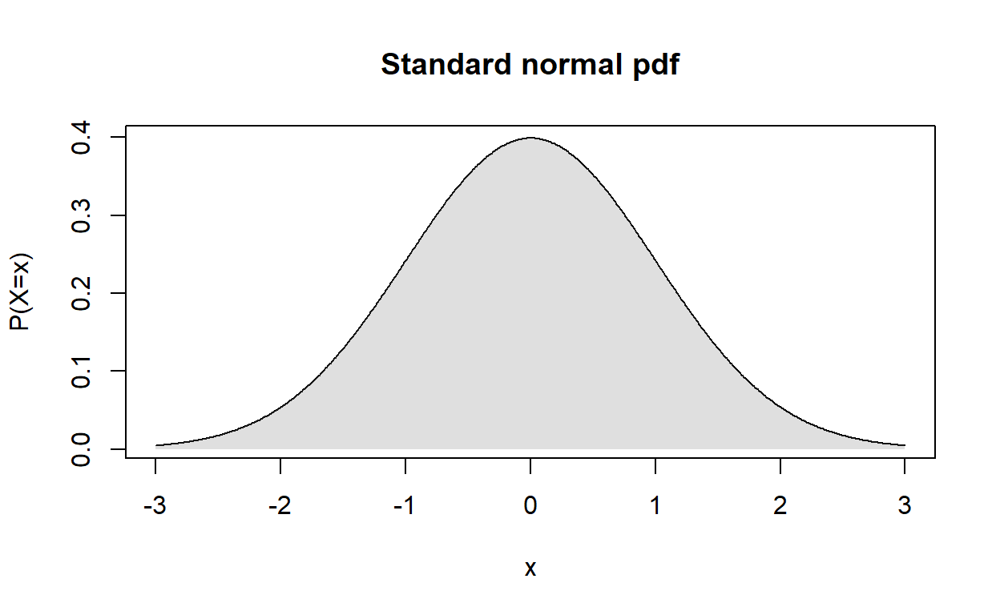
To get the probability density at any value \(x\), e.g., \(x = -1\), run:
dnorm(-1, mean = 0, sd = 1)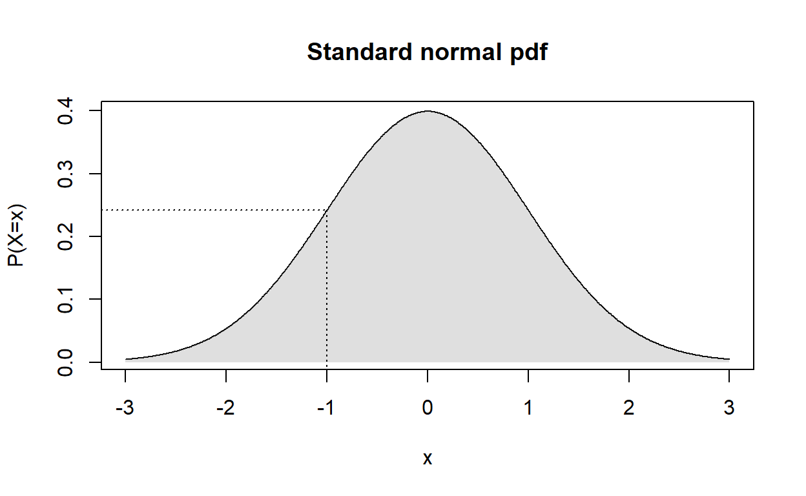
CDF and quantile function
To get the cumulative probability up to any value \(x\), e.g., \(x = 1.9599\), run:
pnorm(1.9599, mean = 0, sd = 1)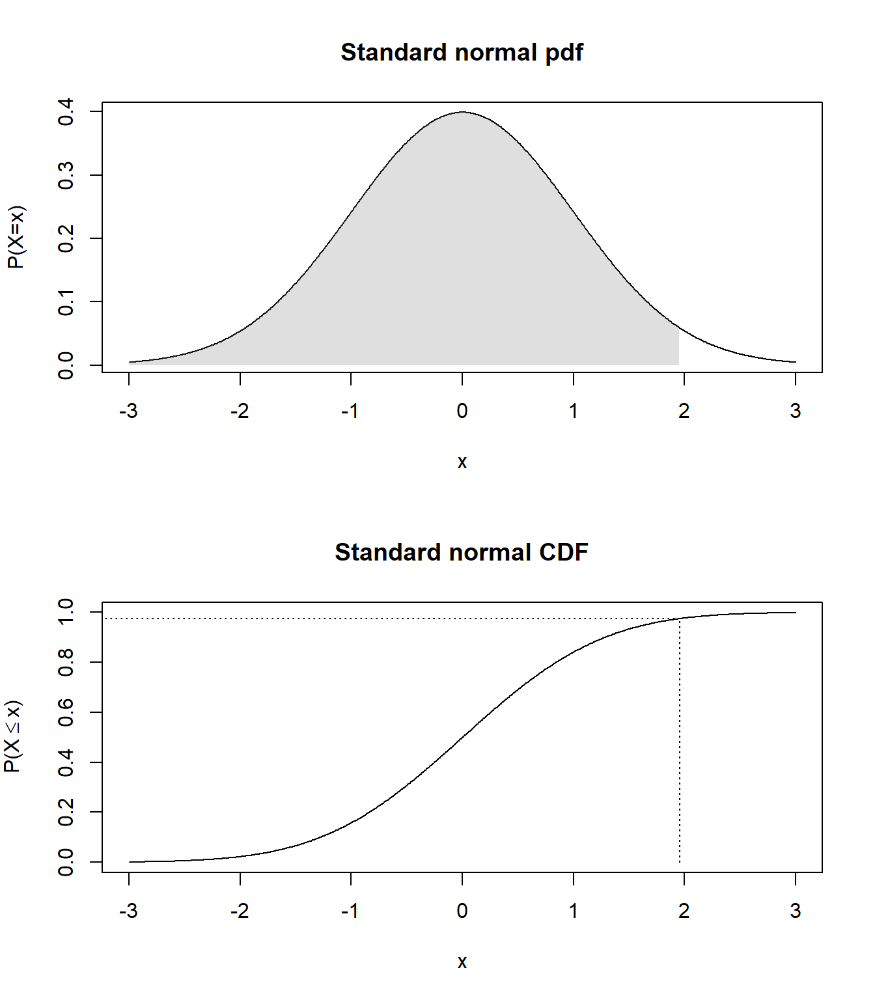
Conversely, use qnorm to get the \(x\) values for any desired cumulative
probability:
qnorm(c(.025, .5, .975))
Random number generation
Lastly, to generate random draws from a distribution with specific
parameters, use rnorm(). The higher the number of draws,
the better the chances that the frequency distribution of your random
draws will approximate the underlying pdf:
# Define number of draws
n_sim <- 1000000L
# Set a seed for replicability
set.seed(20231122L)
# Take random draws
x_sim <- rnorm(n_sim, mean = 0, sd = 1)
# Visualize
hist(
x_sim,
main = paste0("Simulated Standard Normal pdf, N = ", n_sim),
xlab = "x",
ylab = "Pr(X=x)",
freq = FALSE,
breaks = log(n_sim) * 3,
border = "gray60"
)Note: set.seed() ensures the replicability of
random number generation (!).
Multivariate probability distributions
Bivariate probability distributions give the distribution of probabilities for all feasible joint realizations of two random variables.
Multivariate probability distributions generalize this idea to three or more random variables.
Multivariate probability distributions carry the same information for the constitutive variables as univariate probability distributions. We call these variable-specific distributions marginal probability distributions.
Additionally, multivariate probability distributions carry information about the mutual dependence of the constitutive variables. This is typically captured by covariance parameters. Independent random variables share a covariance of zero.
Example: The bivariate standard normal distribution (independent case)
The following shows the joint probability density function of a two standard normal distributions.
We can think of it as a bell-shaped hill with a circular base whose height reaches its peak at \(X1 = 0\) and \(X2 = 0\).
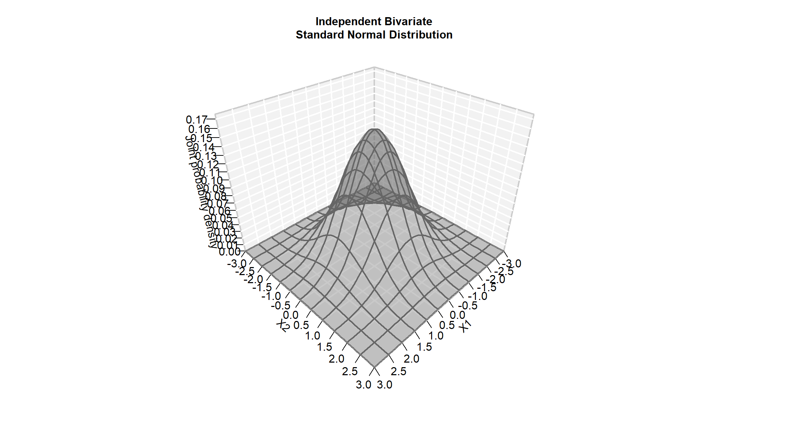
Heatmaps
Heatmaps are a great way of visualizing joint densities in 2D.
They take a bird’s eye perspective and re-express the third dimension (height) through the intensity of color shadings.
They allow us to add information on the marginal distributions, too.
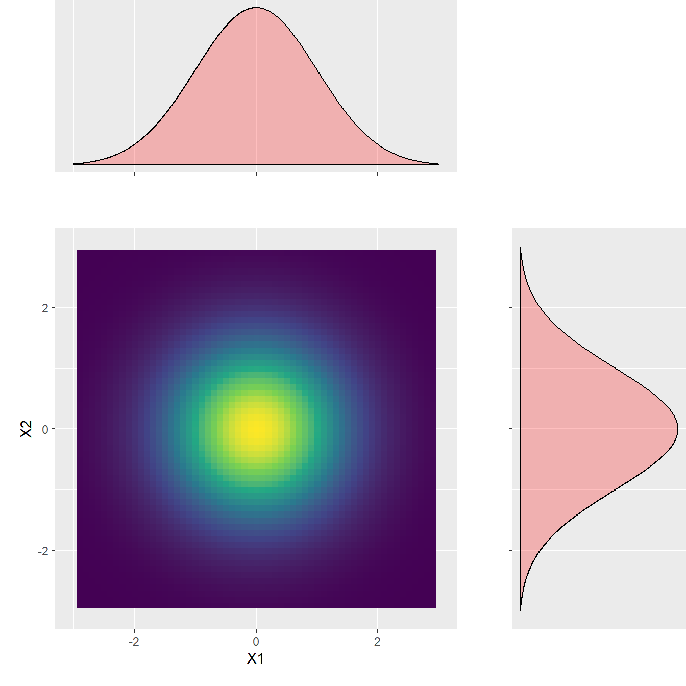
Example: The bivariate normal distribution (interdependent case)
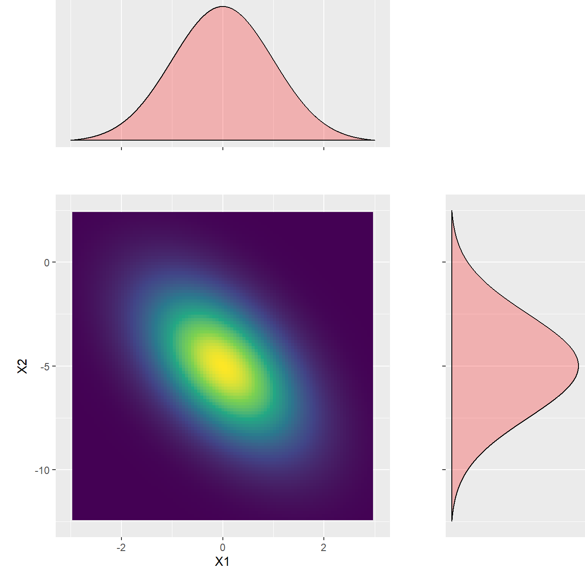
Can you guess:
- The approximate means and standard deviations of \(X_1\) and \(X_2\)?
- Whether the correlation between X1 and X2 is positive or negative?
Frequentist inference
Ask Wikipedia?
The first two sentences of the English-language Wikipedia article defines statistical inference as follows:
- Statistical inference is the process of using data analysis to infer properties of an underlying distribution of probability.
- Inferential statistical analysis infers properties of a population, for example by testing hypotheses and deriving estimates.
The first sentence is universally true across both frequentist and Bayesian frameworks of statistical inference.
However, as we will learn in this course, the bold-printed is exclusive to the frequentist framework of statistical inference.
Key characteristics
- Frequentist analysis seeks to infer population parameters. Such parameters – e.g., the population mean of a variable \(X\) – are considered fixed: Their values are true, exact, and unknown.
- To learn about such population parameters, we rely on a finite sample. Every such sample is considered one out of many possible random samples from the underlying population.
- This implies repeatable data: In theory, we should have a constant stream or pool of independently and identically distributed data, from which we could sample as often as we like.
- Every random sample is an imperfect representation of the underlying population due to sampling variability.
- Imagine we took many independent samples from the same underlying population, and computed the sample analogue of the population parameter for each of them – using a suitable estimator/statistic, the resulting distribution of sample statistics would yield a probability distribution known as the sampling distribution.
Repeated sampling: A though experiment
- Consider an infinite population.
- We want to infer the population proportion of a binary variable \(X\) – say, the number of café-goers who order beverages with oat milk.
- For this task, we will simulate \(S=10,000\) samples of size \(N = 100\).
- Unbeknownst to us, the true population proportion is \(\pi = 0.3\).
- Given that \(X\) is binary, we treat each sample as a series of independent Bernoulli trials – i.e., a draw from a \(\text{Binomial}(100, 0.3)\) distribution, where the probability parameter is equal to the population proportion of \(X\).
Let us first look at the variability in the number of oat-milk drinkers in our samples:
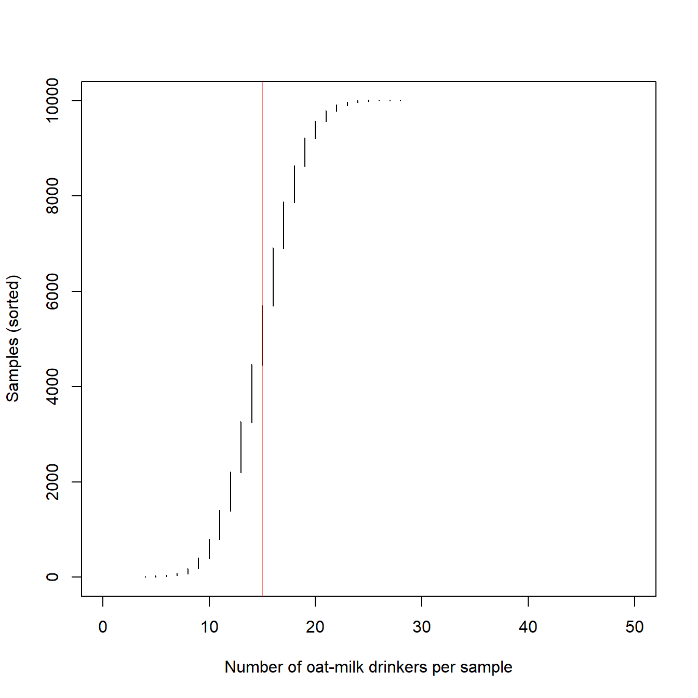
As we can see, there is quite some variability: While many (precisely, 9165) of our 10,000 samples produce between 10 and 20 oat-milk drinkers (with a mean of roughly 14.99), the numbers go as low as 4 and as high as 28.
This is indicative of the significant sampling variability we face when working with small samples.
A simulated sampling distribution
We can re-express the raw sample counts by calculating the sample proportion within each sample. This is also known as an estimator or statistic – a function that takes data as inputs to produce an aggregate output. The specific value this function produces is called an estimate.
Instead of plotting the number of the index of the sorted samples along the x-axis, we will now plot the number of simulations that produce a specific estimate.
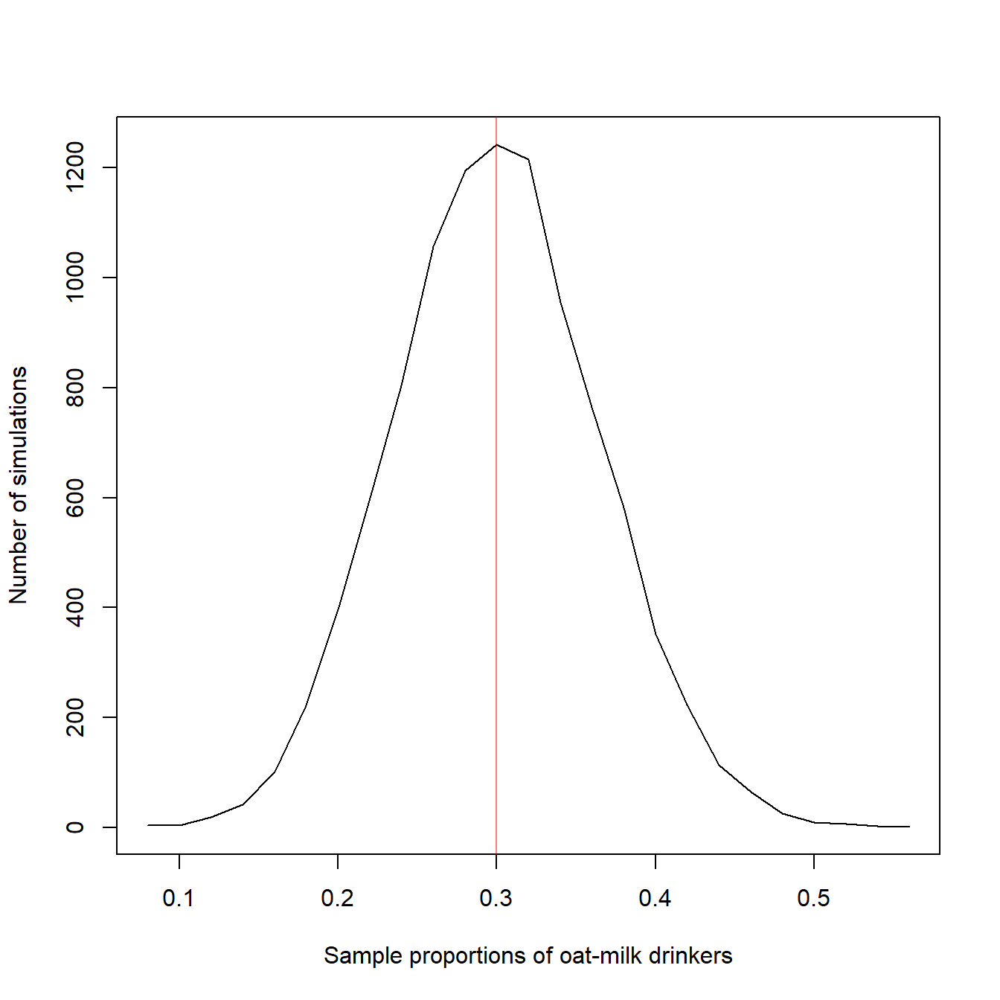
The above is the sampling distribution of the estimator – in this case, the sampling distribution of the sample proportion for a sample of size 50 from the same underlying distribution.
Sampling distributions
You will recognize this distribution as approximately normal. This is due to the central limit theorem: With sufficiently large samples, the probability distribution of the sample mean (analogously, the sample proportion) across many such samples converges to a normal distribution.
Some facts about sampling distributions:
- Its mean is the true population mean.
- Its standard deviation gives the standard error of the estimator.
- Its 2.5 and 97.5 percentiles give the 95% confidence interval. Since the sampling distribution is normal, the 95% confidence interval can be derived as \(\text{mean} \pm 1.96 \times \text{std. err.}\).
- The true sampling distribution of an estimator is never known. It can only be approximated by actually taking many, many independent samples.
The sampling distribution in practice
So, if the true sampling distribution is never known, and cannot be recovered from a single sample, what do we do?
We take the sample statistics of a singular sample at face value:
- Take the sample proportion as the best available estimate of the true population proportion: \(\hat{p} = \frac{1}{N}\sum_{i=1}^{N} X_i\)
- Take the standard error of the sample proportion as the best available estimate of the standard error of the estimator: \(\hat{\sigma}_p = \sqrt{\frac{\hat{p} (1- \hat{p})}{N}}\)
- Derive the 95% confidence interval accordingly (remember to use the correct \(t\)-value in place of the \(z\)-score!)
Example
The first of our 10,000 samples produces the following number of oat-milk drinkers: 9:
- The sample proportion is 0.18.
- The standard error of the sample proportion is 0.054.
- The corresponding 95% confidence interval is 0.071, 0.289.
- It does not contain the true population parameter.
What if we had ended up with our second sample instead?
- The number of oat-milk drinkers is 19:
- The sample proportion is 0.38.
- The standard error of the sample proportion is 0.079.
- The corresponding 95% confidence interval is 0.221, 0.539.
- It does contain the true population parameter.
The correct interpretation of a 95% confidence interval
As we have just learned, whether a 95% confidence interval estimated from a given sample covers the true population parameter depends how (un)lucky we are with our sample.
A given 95% confidence interval does not contain the true parameter with 95% probability or “certainty”. It either does or it doesn’t, so the probability is either zero or one.
A 95% confidence interval “represents the long-run proportion of CIs (at the given confidence level) that theoretically contain the true value of the parameter”.
We can see this by looking back at our 10,000 samples:
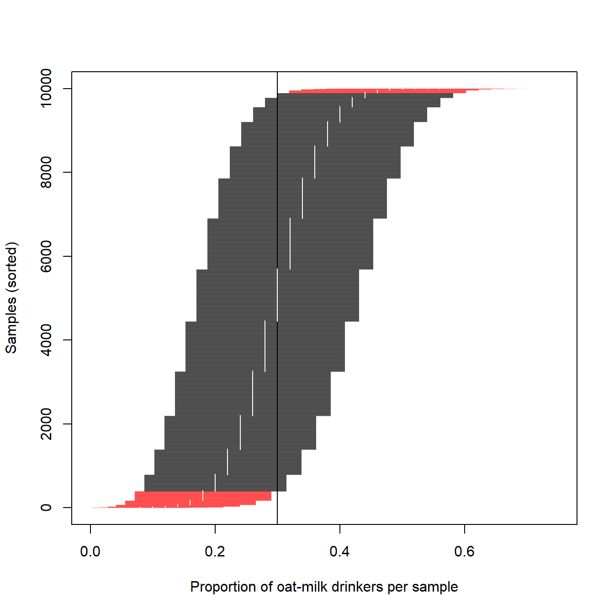
The proportion of 95% CIs that do contain the true mean is 0.9502.
\(p\)-values and the logic of frequentist hypothesis testing
Similarly, \(p\)-values do not give the probability of support for an (alternative) hypothesis.
They give probability of finding other results at least as extreme as the present result, given a null hypothesis, as the long-run frequency across many samples.
Example: Let our hypothesis be that the proportion of oat-milk drinkers in the population is 0.5.
Remember our first sample had 9 oat milk drinkers, a proportion of 0.08.
To test our hypothesis based on this sample data, we first need a t-score:
t <- (p[1] - 0.5) / se[1]
t## [1] -10.94701We can the calculate the \(p\)-value for a two-tailed test as
2 * pt(-abs(t), df = n_obs - 1)## [1] 9.172696e-15This value is near zero. This shows that we would expect that hardly any other sample would produce a result as extreme as ours if the null hypothesis were true. We would therefore reject the null hypothesis.